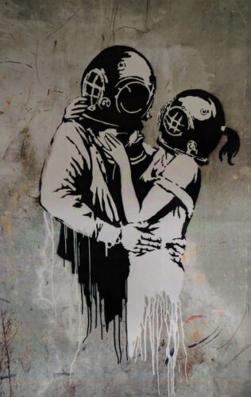

Credit
In 2005, Banksy released this piece designed to the cover art for Blur’s seventh studio album ‘Think Tank’. This led many to accuse Banksy of selling out, but it showed an example of his work.
Ironically, due to a ban on all graffiti related posters by London Transport, Blur had difficulty advertising the album thanks to Banksy’s cover art!
2005-09
Spray Paint
London, UK